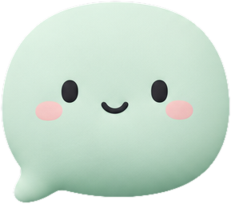

요즘 유행하는 편집 스타일 그대로 따라 해 봤습니다
편
편집하는 민지
구독구독자 18.2만명
조회수 41만회 · 3일 전
요즘 숏폼에서 많이 보이는 편집 스타일을 처음부터 끝까지 따라 해 봤어요. 사용한 프로그램은 고정 댓글에…
요즘 숏폼에서 많이 보이는 편집 스타일을 처음부터 끝까지 따라 해 봤어요. 사용한 프로그램은 고정 댓글에…
댓글 1,284개☰ 정렬 기준

이 영상에서 12개를 말랑하게 바꿨어요서
이걸 영상이라고 올린 거면 진짜 생각이 없는 듯
이렇게 써 보면 어때요? 하고 싶은 말은 그대로예요.
이번 영상은 구성이 좀 아쉬웠어요. 다음 편 기대할게요.
취소댓글
하
@haru_film 2시간 전
3:12 전환 어떻게 하신 건지 알려 주실 수 있나요? 너무 자연스러워요
214 답글
화
@hwanan123 3시간 전
영상 구성이 많이 아쉬웠어요. 다음엔 더 기대할게요.
원문
뇌가 없나 ㅋㅋ 이걸 영상이라고 올림?
조롱상대의 지능을 깎아내리는 표현을 빼고, 영상이 아쉽다는 의견은 남겼어요.
12 답글
민
@minchoNo 5시간 전
자막 폰트가 영상이랑 잘 안 어울리는 것 같아요.
8 답글
익
@user-k2x9 6시간 전
꺼져 진짜 다시는 올리지 마 이 영상 보는 시간이 아깝다말랑이 가린 댓글이에요
3 답글
유
@yuna.log 1일 전
편집 따라 하려고 왔다가 영상 자체가 재밌어서 끝까지 봤네요 ㅋㅋ
96 답글